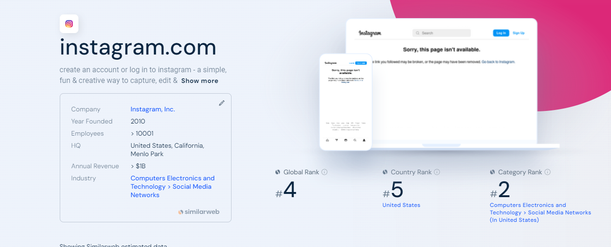
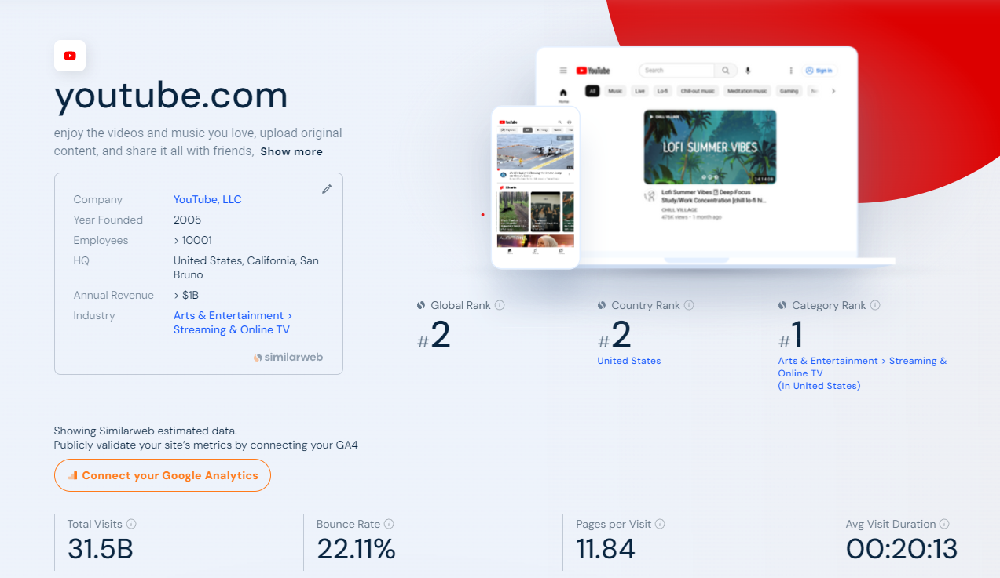
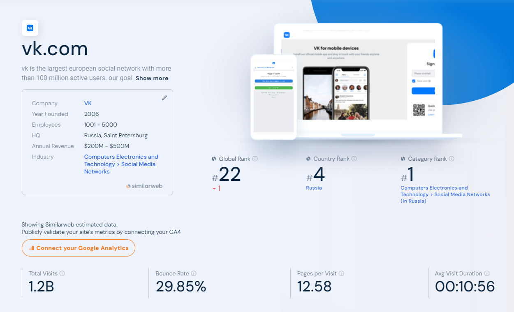

Сравнение соц сетей и их лучшее применение
Исходя из графика на главной странице:

Можно сделать вывод, что если вы ищете самый удобный мессенджер для переписки по работе, с друзьми и родственниками, то выбирайте Telegram, созданный Павлом Дуровым. Мессенджер постоянно поддерживается и обновляется, обрастая новой аудиторией и новыми функциями.
Если вам нужна социальная сеть, в которой вы хотите наблюдать за жизнью известных спортсменов, блогеров, звезд кино и других, тогда вам поможет Instagram. Здесь вы найдете абсолютно любой контент, который вам потребуется.

Причем это четвертая сеть по популярности в мире и за многие годы зарекоммендовала себя как одна из лучших социальных сетей, которой в своем сегменте нет равных.
Хотите записывать и выкладывать видео? Тогда ваш взгляд должен упасть на такой видеохостинг, как ютуб.

На предложенной аналитике видно, что сайт занимает 2 место в мире по посещаемости и 1 место в своей категории, поэтому ничего лучше вам не найти.
Ну и под конец нашего обзора социальных сетей предлагаем вам социальную сеть ВКонтакте от Павла Дурова.

В этой сети вы сможете совместить все предыдущие, а также найдете для себя много новых полезных функций. Наш сайт был вдохновлен дизайном ВКонтакте, а также данная сеть не только смогла превзойти своего прородителя (Facebook), по нашему мнению, но и повлиять на многие другие социальные сети.
p.s. Это наше субъективное мнение и мы советуем ознакомиться с безопасностью и этикетом в интернете.